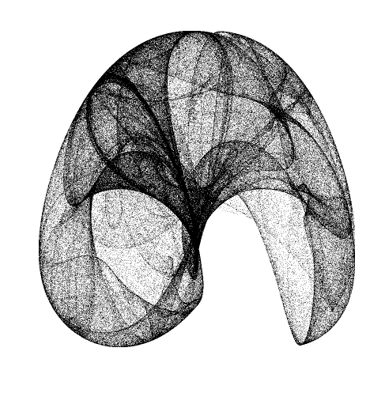

That is very cool. I just uploaded some images to the nodebox flickr pool that use the same functions. Yours brings out the structure of the attractor much more clearly. Thanks for sharing this.
Hi Mark, right after I uploaded this I saw the work you posted on Flickr. What I think is much more interesting to your approach is that you have curves, e.g. the design can still be scaled and transformed. If you are interested in sharing I'd very much like to see the source.
I've been toying with the idea of creating a library for paths in analogy to what Core Image does for pixels, and Colors does for color: a bundle of path filters, connect algorithms, attractors, spirals, etc.
But first I want to release a library for grid layout, which I started developing after the "people may have a very clear or a very vague idea of what they want to do"-problem you mentioned. I feel NodeBox has a lot of functionality to create vaguely defined compositions; a grid library would be more helpful for concretely defined layouts. Hopefully it'll be ready in a week or two.
Tom,
Yes, it is nice that it is in vector form. I've been thinking about refining these a bit and making some large prints for my walls. There are some metallic photo papers which would suit these very well. The code is practically the same as above. It just defines anchor points rather than pixels and uses a related function to decide where to put control points.
Both the grid and path libraries sound very useful. In illustrator you can define art brushes that map one bezier shape onto a different path so if you define say an arrow and apply it to a curve you end up with a curved arrow. I've been wondering how I might try to do this with nodebox. It sounds like it might be related to your path library.
Here is the code to one of the Flickr pieces. The others are more or less variations.
from math import sin, cos, pi size(800, 800) background(1., 1., .98) colormode(HSB) nofill() strokewidth(.15) translate(400, 500) autoclosepath(close=False) a = .75875 b = 6.01 c = -0.84 d = -2.28 x = -7.13 y = 8.43 def xGen(start): x= start while True: x = sin(a * y) - cos(b * x) dx = -cos(b*x) yield x*300, dx def yGen(start): y = start while True: y = sin(c * x) - cos(d * y) dy = -cos(d*y) yield y*300, dy gx = xGen(x) gy = yGen(y) for i in range(3070): x0, dx0 = gx.next() y0, dy0 = gy.next() x3, dx3 = gx.next() y3, dy3 = gy.next() x1 = x0 + 200*dx0 y1 = y0 + 200*dy0 x2 = x3 - 200*dx3 y2 = y3 - 200*dy3 beginpath(x0, x0) curveto(x1, y1, x2, y2, x3, y3) stroke(dx0/2,0.4,.4,.15) endpath()
Tom,
I am really interested by your note on functional composition based on curve. Have you progressed on this topic ?
I also had the same idea, and I started to develop a tool to do it (which somehow happens to have some similarities with Nodebox), called XRVG. If you are interested, you can check it at http://xrvg.rubyforge.org/.
Oops ... I reread my previous post, and you may find it a bit ... intrusive. What did I mean then is that if you are interested, I may try to port some of XRVG curve operators into Nodebox, even if my Python background is quite old now... Let me know what you think about this ...
Hi Julien, right now it's still just ideas based on some things here and here and what Mark Meyer is doing. I know Giorgio Olivero was working on a NodeBox Vector class so that's something to integrate as well. I've taken a look at XRVG (and the images on fractalyze) and there are certainly some interesting things going on. So yes, I might be quite interested in a Python port!
Hi Tom,
Glad you found some things interesting about XRVG.
And thanks for stating your idea sources, they are quite inspiring.
OK for trying to port XRVG for NodeBox. Problem is that I work on Windows ... but I already tested the Nodebox Windows version, and it was OK then. However, I would not be able to use Cocoa methods...
About NodeBox Vector class, do you know when it will be available ? Because I heavily rely on such a class to do bezier computations...
Anyway, thanks again for your opinion, and I hope I will get some results soon...

Peter De Jong attractor
Posted by tomds on Feb 29, 2008
Peter De Jong attractor for Core Image. You can increase the "resolution" by doing more iterations (n) on a bigger scale, and then downscale the resulting layer.
Interesting parameters for the attractor can be found here:
http://ozviz.wasp.uwa.edu.au/~pbourke/fractals/peterdejong/